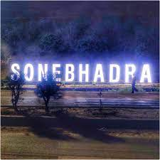
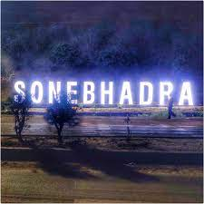

Dudhi or Duddhi is a town and ( Proposed district )& Nagar panchayat in Sonbhadra district in the state of Uttar Pradesh, India. It belongs to Mirzapur Division . It is located 64 km south of the district capital, Robertsganj. Dudhi is a tehsil of sonebhadra district. Renukoot, Anpara, Obra, Robertsganj are the nearby Cities to Dudhi. Dudhinagar-Renukoot is demanded district by dudhinagar people. There are many places to visit and enjoy natural beauty and environment of this town. This has hidden tourism site as locals have named one site as "Mini Goa" people visit this place to celebrate New year. Locals are very friendly.
The market place consists of showrooms of various companies like Home Decor, Rajgharana, Honda Bikes, Sonalika Tractors, Somany Tiles, Bajaj Motorcycles, MRF Tyres and Jewellery shops.
दुद्धी या दुद्धी भारत के उत्तर प्रदेश राज्य के सोनभद्र जिले में एक शहर और (प्रस्तावित जिला) और नगर पंचायत है। यह मिर्ज़ापुर डिवीजन के अंतर्गत आता है। यह जिले की राजधानी रॉबर्ट्सगंज से 64 किमी दक्षिण में स्थित है। दुद्धी सोनभद्र जिले की एक तहसील है। रेनुकूट, अनपरा, ओबरा, रॉबर्ट्सगंज दुद्धी के नजदीकी शहर हैं। दुधिनगर के लोगों द्वारा दुधिनगर-रेणुकूट जिले की मांग की गई है। इस शहर में घूमने और प्राकृतिक सुंदरता और पर्यावरण का आनंद लेने के लिए कई जगहें हैं। इसमें एक छिपा हुआ पर्यटन स्थल है क्योंकि स्थानीय लोगों ने एक स्थल का नाम "मिनी गोवा" रखा है, लोग नए साल का जश्न मनाने के लिए इस स्थान पर आते हैं। स्थानीय लोग बहुत मिलनसार हैं.
बाजार में होम डेकोर, राजघराना, होंडा बाइक, सोनालिका ट्रैक्टर, सोमानी टाइल्स, बजाज मोटरसाइकिल, एमआरएफ टायर्स और आभूषण की दुकानें जैसी विभिन्न कंपनियों के शोरूम शामिल हैं।
Demographics
As of 2011 India census,[1] Dudhi tehsil had a population of 159,001 and Dudhi town had a population of 12,560. Males constitute 54% of the population and females 46%. Duddhi has an average literacy rate of 67%. Male literacy is 74% and, female literacy is 58%. In Duddhi, 17% of the population is under 6 years of age.
2011 की भारत की जनगणना के अनुसार, [1] दुधी तहसील की जनसंख्या 159,001 थी और दुधी शहर की जनसंख्या 12,560 थी। जनसंख्या में पुरुष 54% और महिलाएँ 46% हैं। दुद्धी की औसत साक्षरता दर 67% है। पुरुष साक्षरता 74% है और महिला साक्षरता 58% है। दुद्धी में 17% आबादी 6 साल से कम उम्र की है।
Transport Air
दुद्धी वाराणसी शहर से लगभग 154 किमी दूर स्थित है, जहां निकटतम हवाई अड्डा भी है। दिल्ली, मुंबई, कोलकाता, लखनऊ, आगरा, बैंगलोर, चेन्नई, पटना, खजुराहो, हैदराबाद, गया आदि सहित सभी प्रमुख भारतीय शहरों के लिए उड़ानें उपलब्ध हैं। अंतर्राष्ट्रीय कनेक्शन बैंकॉक, कोलंबो, हांगकांग, मक्का और काठमांडू हैं।
Rail
The Duddhinagar railway station connects Delhi, Jammu, Allahabad, Ranchi, Tatanagar, Lucknow, Bareilly, Kolkata and Kanpur by rail. Some notable trains passing through the town are
.Muri Express (Jammu Tawi - Delhi - Tata Nagar)
.Triveni Express (Bareilly - Lucknow - Shaktinagar)
.Singrauli - Patna Link Express (Singrauli - Patna)
.Shaktipunj Express (Howrah - Jabalpur)
दुद्धीनगर रेलवे स्टेशन दिल्ली, जम्मू, इलाहाबाद, रांची, टाटानगर, लखनऊ, बरेली, कोलकाता और कानपुर को रेल मार्ग से जोड़ता है। शहर से गुजरने वाली कुछ उल्लेखनीय ट्रेनें हैं
मुरी एक्सप्रेस (जम्मू तवी - दिल्ली - टाटा नगर)
त्रिवेणी एक्सप्रेस (बरेली - लखनऊ - शक्तिनगर)
सिंगरौली-पटना लिंक एक्सप्रेस (सिंगरौली-पटना)
शक्तिपुंज एक्सप्रेस (हावड़ा - जबलपुर)
Road
Duddhi is well connected to Renukoot, Robertsganj, Varanasi and Mirzapur by road. Buses are available at all hours of the day from Hathinala to connect with other nearest cities.
दुद्धी सड़क मार्ग द्वारा रेनुकूट, रॉबर्ट्सगंज, वाराणसी और मिर्ज़ापुर से अच्छी तरह से जुड़ा हुआ है। अन्य निकटतम शहरों से जुड़ने के लिए हाथीनाला से दिन के सभी घंटों में बसें उपलब्ध हैं।
City Reviews
City Tourism
Our Founder City Tourism By Priyanshu Jaiswal
Priyanshu jaiswal
Jai Shree Krishna | I am a Founder of City Tourism
 
